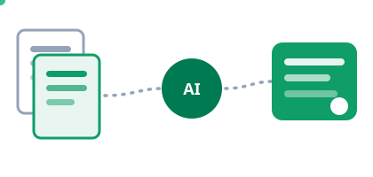

Fra dokument til podcast
Tunge rapporter, lange kontrakter og tætte fagtekster. I dette modul lader du AI'en formidle dem til dig i andre formater, blandt andet som en podcast, du kan høre på vej hjem.

Hvorfor dette modul?
Indtil nu har du chattet med AI'en om alt muligt. Værktøjet i dette modul er anderledes: du giver det bestemte kilder, f.eks. en rapport, et regelsæt eller en række artikler, og AI'en svarer kun ud fra dem, med henvisninger til præcis de afsnit, svaret bygger på. Og så kan den omsætte kilderne til andre formater end tekst: en samtale mellem to værter, et overblik, en studieguide eller en tidslinje.
Hovedværktøjet er Googles NotebookLM. Microsofts Copilot har efterhånden den samme funktion, den er bare ikke helt så god endnu. Begge dele prøver vi.
Øvelse 1: Byg din notesbog
- Gå til notebooklm.google.com, og log ind med en Google-konto.
- Opret en ny notesbog, og tilføj dit dokument som kilde. Du kan uploade PDF'er og tekstfiler, indsætte links til hjemmesider og YouTube-videoer eller vælge filer fra Google Drev.
- Stil tre spørgsmål til indholdet, f.eks. »Hvad er de vigtigste konklusioner?« og »Hvad betyder det her for en afdeling som min?«
- Klik på kildehenvisningerne i svarene, og se hvordan hvert svar peger tilbage på konkrete afsnit i dit dokument.
- Tilføj en kilde mere om samme emne, og stil et spørgsmål, der kræver begge kilder.
Øvelse 2: Lav podcasten
Nu til det, der plejer at få folk til at tabe kæben: NotebookLM kan lave en podcast ud af dine kilder, hvor to AI-værter taler indholdet igennem.
- Find funktionen Audio Overview (lydoversigt) i din notesbog, og vælg dansk som sprog, hvis den ikke allerede har gjort det.
- Klik på Tilpas, før du genererer, og giv værterne en vinkel, f.eks. »fokusér på konsekvenserne for mellemledere« eller »forklar det for en, der er helt ny i emnet«.
- Generér podcasten, og lyt til de første minutter sammen med din sidemand.
- Diskutér: hvad fik samtalen frem, som du ikke havde fanget ved at skimme dokumentet?
Øvelse 3: Samme øvelse i Copilot
Arbejder du et sted med Microsoft 365, har du sandsynligvis allerede en udgave af det samme. Copilot kan svare ud fra filer, du giver den, og kan også lave en lydoversigt i podcastformat. Kvaliteten er endnu ikke på højde med NotebookLM, især på dansk, men den bor til gengæld dér, hvor dine dokumenter allerede ligger.
- Åbn Copilot på din arbejdscomputer, og giv den det samme dokument som i øvelse 1.
- Stil de samme tre spørgsmål, og sammenlign svarene med NotebookLMs.
- Prøv lydfunktionen, hvis din licens har den, og sammenlign podcasten med NotebookLMs.
- Gør status med din sidemand: hvilket værktøj ville du bruge til hvad, og hvorfor?
Hvad skete der lige?

Grænserne: det skal du huske
- Upload er behandling: Når du uploader et dokument, behandler tjenesten det. Brug kun materiale, din arbejdsplads tillader i det pågældende værktøj.
- Podcasten forenkler: To muntre værter kan få alt til at lyde afklaret. Nuancer og forbehold fra kilden kan blive glattet ud.
- Lyt som forberedelse, ikke som erstatning: Podcasten giver dig overblikket, så du ved, hvor i dokumentet du skal læse grundigt.
Refleksion i plenum
- Hvilket dokument i din indbakke lige nu ville du helst have som podcast?
- Hvornår er lyd bedre end tekst for dig, og hvornår er det omvendt?
- Hvem i din organisation kunne have glæde af et lydoverblik, som du kunne lave til dem i morgen?
Kilder og videre læsning
- NotebookLM, værktøjet fra øvelserne
- Google om Audio Overviews på over 50 sprog, heriblandt dansk
- Microsofts vejledning til lydoversigter i Copilot Notebooks